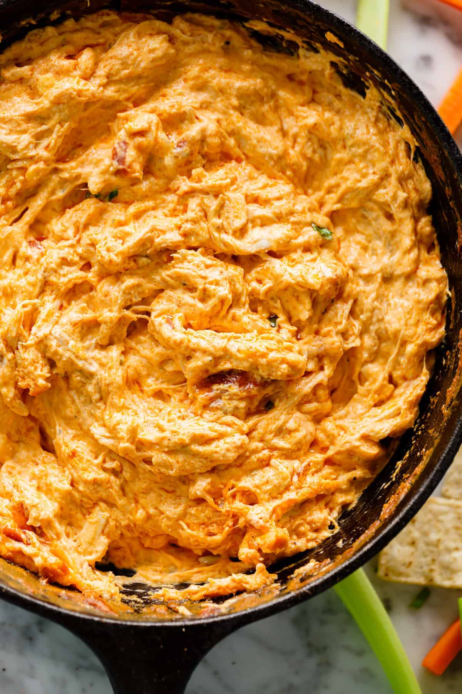

Buffalo Chicken Dip

Description
A cheesy blend of chicken and buffalo sauce. Nothing pairs better on
gamedays than buffalo chicken dip and tortilla chips. Although, no
excuse is necessary to make a batch.
Ingredients
- 1 tablespoon unsalted butter
- 2 teaspoons minced garlic
- 2 cups cooked chicken shredded
- 1/2 cup Frank's Original Red Hot Sauce
- 8 oz (250g) g block cream cheese, softened
- 1/2 cup sour cream
- 1/2 cup white Cheddar cheese freshly shredded
- 1/4 cup American cheddar freshly shredded
- 1/4 cup crumbled blue cheese (optional to serve)
- 2 teaspoons green onions, sliced ( or chives)
- Celery sticks carrot sticks, tortilla chips, crusty bread pieces, potato chips, for serving
Steps
- Preheat oven to 375°F (190°C). Arrange oven rack to the middle of your oven.
- In an 8-inch cast-iron skillet (or an ovenproof pan), melt the butter over
medium-high heat. Sauté garlic until fragrant (30 seconds). Add the chicken
and hot sauce and simmer until sauce has thickened and reduced by half (about
2 minutes).
- Reduce heat to low and stir in cream cheese; mix until combined. Take off
heat, stir through sour cream and top with both cheddar cheese(s) over the top.
- Bake until bubbling around the edges and the cheese has melted (about
10 minutes). Broil (or grill) for a further minute to brown on top.
- Immediately garnish with blue cheese and green onions. Serve with vegetable
sticks, chips, crusty bread pieces for dipping.